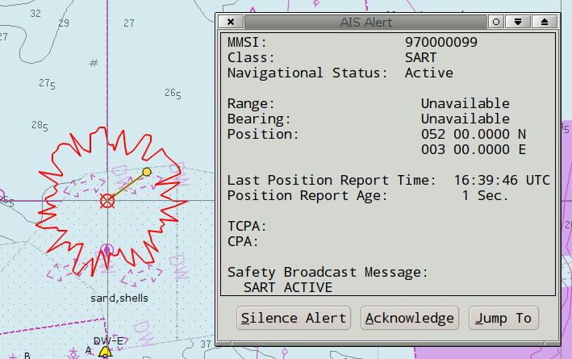
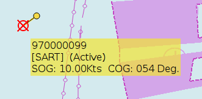
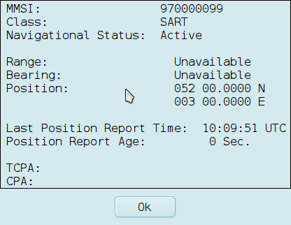
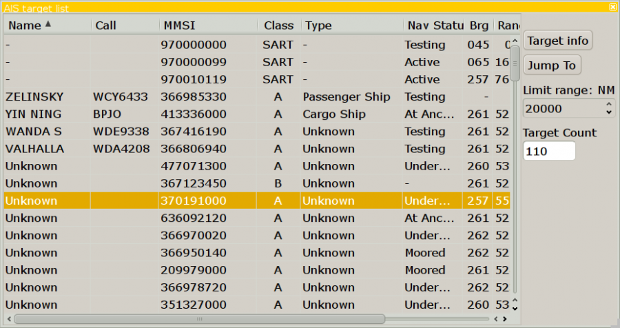

AIS-SART
Die US FCC Behörde hat in 2012 das Aussenden von Nachrichten über AIS SART Geräte freigegeben. Diese Geräte waren ursprünglich für SOLAS klassifizierte Schiffe konzipiert als Alternative für Radar SARTs bei Rettungsbooten, aber ihre Effizienz führte zur Entwicklung von Mann-über-Bord Geräten. AIS SART Devices Now Approved in the U.S., Beitrag vom 2. Mai 2012
Search And Rescue Transponder (SART) oder EPIRB, die AIS Nachrichten senden, sind jetzt am Markt erhältlich. In einer Notsituation wird die Position als AIS Ziel in OpenCPN angezeigt. AIS SART kann ein Gerät auf einem Schiff, in einer Rettungsinsel oder in einem Mann-über-Bord Gerät sein. Gemeinsam ist ihnen das Symbol unten einer Notsituation:
 Notsignal sendende SART Station, zu behandeln wie "Mayday"
Notsignal sendende SART Station, zu behandeln wie "Mayday"
OpenCPN verarbeitet ein empfangenes SART Notsignal als sichtbaren Alarm und Warnton, wenn dies in den Einstellungen bei Lasche AIS eingestellt ist.

Wurde der Alarm bestätigt, verhält sich das Ziel wie jedes andere AIS Ziel. Im Bild unten ist der Cursor über dem Ziel.

Und hier ist eine AIS Ziel Abfrage:

AIS SART Nachrichten und DSC Notrufe sind immer oben in der AIS Liste:

Man kann ein SART testen, um sicher zu gehen, daß es funktioniert.
 Angezeigtes Symbol beim Testen eines AIS-SART Gerätes
Angezeigtes Symbol beim Testen eines AIS-SART Gerätes